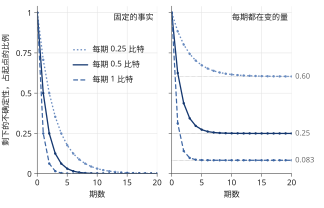

第 10 章 有限注意
DellaVigna 与 Pollet（2009）研究了在一周末尾到来的盈余消息，问的是周五是否有更多的投资者分心（distraction）。他们的数据是 1995 年 1 月至 2006 年 6 月美国的季度盈余公告（announcement），最终样本有 143,583 次，其中只有 5.7% 在周五发布（工作论文版的数字）。与其他工作日的公告相比，周五公告的即时反应低 15%，即时反应按公告当天与次日计；延迟反应高 70%，延迟反应按公告后第 2 至第 75 个交易日计；公告前后的交易量低 8%（工作论文版的数字）。
在他们的模型里，每一期都有一部分投资者分心，看不到关于公司业绩的信号，所以如果周五分心的比例更大，价格的变动当时到来的就少一些，后来到来的就多一些，整个变动一样大（工作论文版）。这是他们的模型对这些数字的读法，后来的漂移（drift）也可能另有原因（本书的判断；1.6.5 节）。在他们的数据里，周五公告之后的整个变动比其他公告的稍大一些（工作论文版），他们对延迟的度量考虑了这一点（10.2 节）。1
10.1 有限注意的几种形式
消息进入价格要经过三步：它变得公开可得（publicly available information），任何人想查就能查到；决定价格的人看到它；他们用上它，给它应有的权重（1.6.5 节和 4.2 节）。在 DellaVigna 与 Pollet 的模型里，周五的公告停在第一步与第二步之间，因为分心的投资者没有看到它们（工作论文版；10.2 节）；在 Hirshleifer 与 Teoh 的模型里，备考利润（pro forma earnings）停在第二步与第三步之间，因为不专注的投资者（inattentive investor）看到了这个数字，照它的表面意思接受它（9.3 节和 10.3 节）。这两处位置都来自模型。
根模型（root model）假设无限注意（unlimited attention），这一条默认列在 5.8 节的表 5.1 里：获取与处理信息都不花成本，人人看到全部可得的信息，也都用上。本章去掉它。
注意力（attention）的两层要分开。观测层（observation layer）说的是一个人究竟有没有看到消息；处理层（processing layer）说的是她看到消息以后给它多大的权重，重复、显著性（salience）和语气都会改变这个权重。同一条消息再来一次时，差别就显出来：第一次错过它的人把它当作新消息来交易，已经用过它的人可能把它算两次（本书的判断；10.7 节）。价格反应的形状分不开这两层，要分开它们，需要一个参照信号（reference signal），即写进证据设计里的一个对照，例如同一内容的第二次发布（本书的判断；10.2 节和 10.7 节）。
10.2 节至 10.7 节讨论有限注意（limited attention）的六种形式，表 10.1 把它们并排列出；每一种属于哪一层、容量律（capacity law）是否适用于它，是本书的分类（本书的判断）。我们把这几种形式分开，因为每一种限制的东西不同，要做的核对也不同。3.5 节的容量律只适用于理性疏忽（rational inattention）；那一节没有把没有看到、显著性和没有想明白看到的东西算作占用容量，我们把停留窗口（dwell window）也归入这一类（本书的判断）。有三种相关的成本归其他各章：要花钱的信息（4.5 节，与从价格学习合在一起时在第 16 章），寻找可以向他们学习的人（第 19 章），以及处理信息的物理成本（4.8 节）。
表 10.1 有限注意的几种形式
| 形式 | 限制的是什么 | 层 | 容量律是否适用 | 本章的例子 |
|---|---|---|---|---|
| 观测门控（observation gating），10.2 节 | 有些人看不到公开的消息 | 观测 | 不适用 | 周五的盈余公告；客户与供应商 |
| 显著性，10.3 节 | 呈现方式决定消息用上多少 | 处理，或者根本没有读进来 | 不适用 | 写在附注里的期权成本；头版标题 |
| 理性疏忽，10.4 节 | 每期吸收的信息有上限，由这个人自己分配 | 消息有多少进入一个人的行动，以比特（bit）计；想明白看到的东西不在其内 | 适用，只有这一种 | 跟踪一个在变的量（图 10.1） |
| 停留窗口，10.5 节 | 一条帖子只在屏幕上和记忆里停留一段时间 | 观测，加上遗忘（forgetting） | 不适用 | 推特上的话题 |
| 选择收集哪条信息，10.6 节 | 每个人能收集的有限，持有期短时收集别人收集的东西 | 收集之前 | 不适用 | 调查型羊群（investigative herding；据 Brunnermeier 的转述） |
| 处理与决策能力有限，10.7 节 | 消息看到了，没有想明白；每隔几期才作一次决策 | 处理；行动 | 不适用 | 旧闻（stale news）再算一次；很少交易的投资者 |
10.2 观测门控
DellaVigna 与 Pollet 为连续分布的一群投资者建模，其中一部分即专注的投资者（attentive investor），观察到盈余信号，并用它决定持有多少；其余的即分心的投资者，既观察不到它，也不用它（工作论文版）。套利限制（limits to arbitrage）在这里的形式是风险厌恶（risk aversion），在这种限制之下，分心的投资者会影响价格；在模型里，他们所占的比例越大，价格的即时反应越小，延迟反应越大，合起来的反应不受影响（工作论文版）。
他们用延迟反应比（delayed response ratio）来量延迟，即价格反应里来得晚的那一份：最好与最坏的盈余意外之后价格变动的差距里，第 2 至第 75 个交易日来的部分，除以第 0 日至第 75 日的全部（工作论文版的数字）。在他们的模型里，这个比值是两个信号的延迟反应之差除以它们的长期反应之差，它只给出分心的投资者所占比例的下界（工作论文版），手稿给出的这个下界不止一种写法（数学框 10.2）。
作者用约数写道，延迟反应在周五占全部反应的 60%，在其他工作日占 40%，按他们的模型，分心的投资者分别至少占 60% 和 40%（工作论文版的数字）。在他们表 II 的七种设定里，周五的比值比其他日子的高 0.1131 至 0.1952，周五的比值在 0.5388 与 0.6187 之间，其他日子的在 0.4068 与 0.4491 之间（工作论文版的数字）。周五的检验说得上话的是周五与其他日子之差；其他日子的水平里，还包含盈余消息之后让价格漂移的其他一切原因，所以它对平常一天有多少投资者分心说明不了多少（本书的判断；第 12 章）。周五公告之后更大的整个变动不合模型，作者指出，这个比值用长期反应作归一，控制了这个差别（工作论文版）。
适用边界 这个检验只涉及一种注意力低的日子，即周五，样本是 1995 年 1 月至 2006 年 6 月美国的季度盈余公告（工作论文版的数字）。延迟部分占全部反应的比例，周五约为 54% 至 62%，其他工作日约为 41% 至 45%（工作论文版的数字）；它只给出分心的投资者所占比例的下界，模型对这个比例有多大没有作出预测。这些数字来自作者的手稿，我们没有核对期刊版。
在他们的静态模型里，没有看到信号的投资者，与看到了信号、给它的权重为零的投资者，持有同样的头寸，留下同样的价格（本书的判断）。所以周五的这些数字与消息当时没有用上相合，价格反应的形状说不出它是没有看到，还是看到了、放在一边；这个例子算作观测层的证据，只是因为作者选了周五来挑出谁没在看（本书的判断；10.7 节）。他们的一个脚注又说，在他们的模型里，分心的投资者晚一期看到信号，还是永远看不到，股票的收益都一样（工作论文版），两种情形都在观测层（本书的判断）。
较弱的反应发生在什么时候，数据没有回答：作者分不开交易时段内发布的公告与收盘后发布的公告，所以无法检验最初的反应变弱是在周五，还是在周末之后的周一；而且近几年周五的公告在收盘后发布的可能性显著更低，使直接的比较无法进行（工作论文版）。
公司自己挑选发布公告的日子：在作者的模型里，手上有足够负面的消息、看重短期的管理者，会在分心的人多的日子发布它，因为他们更愿意要一个减弱了的即时反应（工作论文版；15.2.2 节）。他们的比值用对最好与最坏的意外的反应之差除以整个变动，所以只要价格按意外的大小成比例地变动，周五的坏消息多一些，本身不会抬高这个比值（本书的判断）。在周五发布的公司仍可能在别的方面不同；作者写道，公司之间的差异不可能完全控制住，他们的结果在控制了时间、市值与盈余意外的波动性之后依然稳健（工作论文版）。2
Cohen 与 Frazzini（2008）给出第二个案例。他们的客户数据涵盖 1980 年至 2004 年，在这些数据里，一家公司的主要客户在某个月有一次大的收益时，供应商的股价在当月补上最初价格缺口的约 60%，其余的 40% 在随后六个月里补上（工作论文版的数字）。客户自己的价格则在当月就吸收了几乎全部的变动，系数是 0.94，与 1 没有统计上的显著差别（工作论文版的数字）。我们把这读作同一条公开消息在一个月之内到达它直接关系到的资产，用几个月到达一项关联的资产（本书的判断）。供应商迟来的变动，既与没有看到客户消息的持有者相合，也与看到了、给的权重太小的持有者相合，他们的表分不开这两种（本书的判断）。作者用一个替代指标挑出注意力的约束更可能起作用的公司，并把结果读作注意力不足（工作论文版）；本书凭这个设计把这个案例算作观测层的证据，因为这个替代指标，即同时持有两家公司的基金的数目，用意是挑出持有者不太可能收集客户信息的那些供应商（本书的判断；10.8 节）。
分心是对公开消息反应不足（underreaction）背后至少三种机制之一，第 12 章把它们并排列出（本书的判断）。周五公告之后额外的漂移，大约在公告后 30 个交易日变得更明显（工作论文版的数字），这些数据分不开后来重新注意到消息的投资者，与下一次定期公告带来的截断（本书的判断；第 12 章）。3
10.3 显著性
设两家公司都用股票期权支付管理者的部分薪酬，一家把预期的成本从利润里扣除，另一家只在附注里披露它；这两种披露带有同样的信息。Hirshleifer 与 Teoh（2003）认为，注意力有限时，信息上等价的披露仍然可以对投资者的看法产生不同的影响，取决于它们怎样呈现；他们的模型假设，以显著、容易处理的形式呈现的信息更容易吸收，例如在财务报表里列为费用的成本，比只在附注里披露的成本更显著。
他们的命题 8 说，如果一些投资者注意力有限，那么在授予期权时不把期权薪酬的预期成本计为费用的规则下，市场高估这家公司，它的长期异常收益（abnormal return），即超出同类股票正常水平的那部分收益，为负；规则把全部成本计为费用时，情形相反。Garvey 与 Milbourn（2003）发现，一家公司没有确认的期权薪酬越多，它在 1996–2000 年间随后的异常收益越低，而且这些糟糕的收益集中在季度财务报告发布的那几个月（据 Hirshleifer 与 Teoh 的转述）。在本章的来源里，它是唯一一项跨许多公司研究显著性与收益的研究，涵盖五年，本书又只从转述里知道它，所以单靠它分量不大（本书的判断）。
在 9.3 节那个备考利润的例子里，他们模型里的不专注的投资者看到报告的数字，把它当作已经调整到信息最多的样子，误以为自己在完整地处理信息，而只要有一些不专注的投资者缺少这种自知，相近的结果就成立。我们把他们模型里的显著性读作处理上的事，因为信息是公开的，有时已经看到，出问题的是用上了多少；例外是略过附注、根本没有把它读进来的投资者（本书的判断）。作者在他们模型的局限里列出，注意力是外生（exogenous）的，他们也没有明确分析投资者怎样分配注意力。
Sims（2003）举了一个报纸的例子。许多报纸每天在财经版后部一个读者能预料到的位置刊登联邦基金利率，绝大多数读者并不每天看这个数字，在看了这一版的读者里，绝大多数也不因为这个数字改变自己的行为，两层都在里面（本书的判断）；《纽约时报》头版用三栏的标题报道美联储出人意料地把利率提高 1.5%，就很可能让许多读者据此行动。在 Sims 自己的模型里，一个人尽可能好地给她看到的东西编码，所以同样的信息用两种方式呈现对她没有差别，呈现方式只通过报纸替读者完成的编码服务起作用（本书的判断）。
旧消息以更醒目的方式再次出现时，可以再一次推动价格。在 1.1 节 EntreMed 的案例里，1998 年 5 月 3 日《纽约时报》（New York Times）的头版报道，给出的几乎就是报纸 11 月报道过的信息，只是醒目得多；11 月的报道登在 A28 版，第二篇报道之后，股价涨得多得多。Merton（1987）对这样的上涨给出两种读法，并说明怎样把它们分开。
- 投资者基础（investor base）扩大。一篇报纸或其他媒体的报道，传到许多还不持有这只股票的投资者手里，可以使其中一些人开始关注这家公司；在他的模型里，投资者基础相对扩大，会降低公司的资本成本、提高它的市场价值（工作论文版）。照这种读法，上涨是持久的。
- 一时的时尚。同样的投资者行为与公司行为，也可以出现在非理性行为的模型里，在那样的模型里，媒体报道可以制造并维持一时的时尚；原则上可以看价格的变化是暂时的还是永久的，来检验时尚假说（fads hypothesis），前提是时尚持续得不太久（工作论文版）。照这种读法，上涨会消退。
对 EntreMed，Huberman 与 Regev 写道，他们的图给人的印象是，5 月 4 日的上涨有一部分是暂时的，相当大的一部分是永久的。一次事件说不出哪一部分对应哪一种假说，也说不出各自贡献多少（本书的判断）。
Vosoughi、Roy 与 Aral 写道，新奇（novelty）吸引人的注意，我们把它算作又一种显著性（本书的判断；9.4 节）。公司怎样选择呈现自己的消息，是第 15 章的主题。4
10.4 理性疏忽与容量律
Sims（2003）的理性疏忽把注意力建模为一条信道，每期只能传送有限的信息：一个人的行动只能经由一条 Shannon 容量有限的信道依赖她的观测，选择观测误差的性质是她的最优化问题的一部分。她每期得到的关于当前状态的信息低于一个容量 ，以比特计，只跟踪一个量时，这个约束就完整地刻画了问题；这就是 3.5 节容量律的上限。1 比特把可能性减半，就像一个两种回答同样可能的是非题的答案那样（2.2 节）。
Sims 自己的例子是一位跟踪自己财富的消费者，她的财富在消费之后剩下的部分，每期按总利率增长，再加上她的收入；最简单的情形是收入在各期之间相互独立。收入服从正态分布、容量用满时，每期的不确定性先增大，因为来了一个新的收入冲击，旧的误差也延续下来，然后这一期的观测再把它缩小。对一个服从正态分布的量，她每吸收 1 比特，误差的标准差就减半，所以 比特把误差的方差缩小到原来的 （本书的推导）。
如果这个量是一个不再受新冲击的固定事实，例如一个已经结束、公司还没有公布的季度的利润，那么每一期都再按这个因子缩小方差，方差趋于零，所以容量的限制只拖慢学习（本书的推导）。一个有两种结果的事实至多含 1 比特（2.2 节和 2.3 节），一个服从正态分布的量可以取任何值，总还有更多可学（本书的判断）。
如果这个量不断变动，像一家公司的销售额或一项资产的价格那样，每期就来一个新的冲击。只要容量快过这个量自身的动态放大旧误差的速率，方差就停在零以上的一个下限，在那里每个冲击添上的，等于她的读数消去的（本书的推导；数学框 10.1）；随机游走（random walk）每期在上一期的值上加一个独立的冲击，它不放大旧的误差，所以任何正的容量都给它一个下限（本书的推导）。在这个模型里，她永远不能完全追上：她的估计平均而言是对的，但误差停在下限，每个新冲击都只是逐步进入估计（本书的推导）。对一个以每期 0.5 比特跟踪的随机游走，一个冲击在第一次读数时进入一半，两次之后进入四分之三，三次之后进入八分之七（本书的计算）。这个模型描述的是一个观测者。在一个由许多可以自由双向交易的人决定的价格里，因人而异的误差往往相互抵消，会推动价格的主要是他们共有的那一部分，它来自共同的来源或共同的读消息的方式（本书的判断）；卖空（short selling）受限时，像 Miller 的论证那样（10.9 节），误差的分散也可以推动价格（本书的判断；第 20 章）。
图 10.1 给这两种情形配上数字，容量取每期 0.25、0.5 和 1 比特。量是一个固定的事实时，三条线都趋向零；量是一个随机游走时，三条线分别停在起始不确定性的 0.60、0.25 和 0.083，0.5 比特时，下限等于一期冲击的方差（本书的计算）。5

Sims 论文里印出的两个数需要更正（数学框 10.1）。他的图 6 对每个新读数用 0.5 的权重，他把这张图的容量印作 0.21 比特，按他自己的公式，它是 0.5 比特（本书的计算）；他的容量以比特计，所以他的稳态的底是 2，他印的却是自然对数的底（本书的推导）。
Sims 提出，几个跟踪问题可以共用一个容量，每个问题分到多少，取决于这个问题对她有多重要，以及多给它一些容量能多得到多少；在他收入有三个组成部分的例子里，容量的最优用法是紧紧跟踪不可预测的部分，把多得多的观测误差留给变动缓慢的“总量”部分。一个人跟踪的一切共用一份预算，是 Sims 的建模假设，Shannon 的理论给每条信道各自的容量（本书的判断；2.7 节）。
本书读过的来源里，没有一个测量过一个人的容量：Sims 的数是数值例子，他没有估计 。他写道，关于宏观经济数据的信息率这样低，只有假设大多数人把几乎全部的信息处理容量用在别的种类的信息上，才说得通，在他看来这个假设似乎是现实的；他又写道，把人们对宏观经济数据的反应建模为数据仿佛经由一条低容量的信道到达他们，并非不合理。10.9 节的关注度（investor attention），即一项资产引来多少注意，与一个人的容量是不同的量（本书的判断）。6
10.5 停留窗口与消息竞争
6.6 节讲过给有限注意建模的第二种办法，来自 Weng、Flammini、Vespignani 与 Menczer（2012）。在他们的模型里，一条帖子只在推特用户的列表或记忆里存活有限的时间，同一个窗口既决定一条帖子能看到多久，也决定它能记住多久。本书把它叫作停留窗口，它在观测层起作用，同时带着遗忘（本书的判断）。
窗口与容量限制注意的方式不同（本书的判断）。设一位交易者昨天看到一条股票消息。在窗口之下，她今天把它传出去的机会只取决于它来了多久，不管此后又来了十条新消息还是一百条；在所有消息共用一个容量之下，即 Sims 的建模假设（10.4 节），每来一条新消息，留给旧消息的注意就少一些（本书的判断）。在 Weng 等的模型里，屏幕上的每个模因（meme），即一段内容，例如一个话题标签，以一个固定的概率引起用户的注意，不管屏幕上还有什么，所以只有她凭记忆发帖时，模因之间才相互挤占，那时每个模因的机会按它在她记忆里所占的份额（本书的判断）。一个检验可以问，一个给定的旧话题，在新话题来得格外多的时期，得到的转发是否更少（本书的推论）；忙碌的时期在别的方面也不同，所以检验要考虑每个话题自己的趋势，本书的来源里没有人做过这个检验（本书的判断）。
Weng 等用一个用户所发帖子的话题的熵（entropy），来量她的注意广度（breadth of attention），她的帖子全是同一个模因时熵为零，每条帖子各说一个不同的模因时熵最大。他们发现，无论系统多么多样，一个用户的注意广度基本不变，他们把这读作一个用户能顾及的模因数目有上限；他们的模型直接假设，模因的存活以别的模因为代价。熵量的是一个用户的帖子有多分散，她发帖的条数又限制了它，所以平均值稳定，也可以来自发帖条数稳定（本书的判断）。他们的数据是 2010 年 10 月至 2011 年 1 月的转发，不过他们的一些图涵盖的时间更长（本书的判断；6.7 节）。
作者写道，社交网络的结构加上对有限注意的争夺，是模因的流行程度出现巨大差异的一个充分条件，他们的结果并不证明内在价值不起作用（6.6 节）。一个话题或一只股票格外流行时，我们会先问，网络的不均匀与停留窗口能否解释它，再考虑归功于质量或信息（本书的判断）。7
10.6 选择收集哪条信息
设一位交易者只有时间研究一只股票的一个问题，而且买入后几周之内必须卖出。如果她学到的东西在她卖出之后才进入价格，它就给她带不来任何收益，所以她的研究要在卖出之前带来回报，只有两条路：答案及时公布，或者足够多的其他交易者学到同样的东西并据此交易（本书的判断）。
Brunnermeier（2001）综述了关于这种选择的模型。提前平仓的交易者对价格未来走势的关心，多于对真实的基本面价值（fundamental value）的关心，所以他们偏好短期信息胜过长期信息，甚至可能忽略长期信息；由于未来的价格也取决于别人收集什么，他们有动机收集同样的信息，这种调查型羊群是 Froot、Scharfstein 与 Stein（1992）的研究重点。
在 Froot、Scharfstein 与 Stein 的模型里，每个交易者只能收集一条信息，即关于两个事件之一的信号，并且必须在第三期平仓，尽管信息可能要到第四期才反映在价格里（据 Brunnermeier 的转述）。资产的价值以一定的概率在交易者平仓之前公布，否则在他们平仓之后公布。如果总是在平仓之后公布，所有交易者都收集关于同一个事件的信息，没有人收集关于另一个事件的信息，平仓之前公布的机会足够小时，羊群行为（herding）也仍可能出现。公布肯定在平仓之前到来时，每个交易者偏好研究不在别人收集信息的主要焦点上的事件，于是他们的搜寻努力是“策略替代”（strategic substitutes），公布从不提前到来时，是“策略互补”（strategic complements）：替代的意思是，别人越多研究一个事件，自己也研究它的回报越小；互补的意思正相反。如果交易者只关心最终的清算价值，就不会有这种羊群行为，拥有别人没有的信息会更好（据 Brunnermeier 的转述）。
常见的结论是，别人学到同一条消息会降低它对持有者的价值。3.4 节论证过，这个结论假设了她持有到信息公开（holding until disclosure），持有期更短时，别人的学习可以提高它的价值，不过许多人持有同样的头寸、一起离场时，他们的离场会让价格反向变动（本书的判断）。调查型羊群就是这一点在选择收集什么上的后果（本书的判断）。每个交易者在收集任何信息之前作出这个选择，这使它不同于没有看到消息（10.2 节），也不同于一个人能吸收多少的上限（10.4 节）；它算作有限注意，是因为每个交易者能收集的有限，在模型里是一条（本书的判断）。第 23 章讨论在价格收敛之前就结束的持有期。8
10.7 处理与决策能力有限
Tetlock（2011）问的是，投资者是否对旧闻作出反应，旧闻即重复已经出现过的内容的消息。他的数据是 1984 年至 2004 年关于标准普尔 500 指数成分公司的公开新闻，共 35 万多条报道（工作论文版的数字）。市场对旧闻报道的反应在下一周部分反转（reversal），对新信息较多的报道的反应，反转要小得多，甚至继续沿原方向走（工作论文版）。在盈余消息里，最旧的报道之后，第二至第五个交易日累计反转 16 个基点，一个基点是百分之一个百分点，最不旧即最新鲜的报道之后继续走 36 个基点；他对两者之差单独作的估计是四天累计 54 个基点，t 统计量为 3.30，单靠偶然很少会得到这么大的值（工作论文版的数字）。旧闻报道之后的反转，在小额交易占比高的股票里更大，他认为这些结果和其他结果，与个人投资者对旧闻过度反应（overreaction）相符（工作论文版）。
在他附录的模型里，一笔清算股利分三期逐步向所有投资者揭示，两类投资者只在怎样处理第二期的信号上不同，这个信号既含旧信息，也含新信息（工作论文版）。非理性的投资者把旧信号的一部分当作新信息，在他的模型里，两种过度反应的根本原因是他们混淆了旧信息与新信息（工作论文版）。两类投资者看到同样的信号，所以差别完全在处理规则（processing rule）上，我们把这个效应归入处理层（本书的判断）。把旧消息当作新消息，就是 2.4 节的重复计数（double counting），也就是 7.5 节的说服偏差（persuasion bias），第 13 章追踪它对价格的影响（本书的判断）。
3.3 节把起作用的是观测门控还是处理时给的权重留给数据来判定，Tetlock 把旧消息与新鲜消息分开，就是让数据作出判定的那种参照信号，因为一条旧闻报道重播的是以前出现过的内容（本书的判断）。重播在每一层留下的痕迹不同：如果决定价格的人里有一些错过了这个内容，其余的人按贝叶斯法则给了它权重，价格移动并停在那里；如果所有人都看到过，价格不动；如果他们看到过，现在又把它算一次，即处理中的重复计数，价格先走过头，然后回走（本书的判断）。所以旧闻之后的反转与重复计数相合，与按贝叶斯法则给权重的观测门控不合（本书的判断）。不过反转只是部分的（工作论文版）：反转的部分也与一时的时尚（10.3 节）和消息吸引来的买入相合，留下的部分可能有持久的原因，例如投资者基础扩大（10.3 节），这些数据说不出两部分各自的原因（本书的判断）。
Tetlock 只在第二至第五个交易日量了最新鲜的盈余消息之后的延续（工作论文版）；一次漂移只有在从不反转时才指向少计（underweighting），即给的权重低于贝叶斯法则给的权重，因为先漂移、后反转的，可以是对一个仍在增大的早先信号的多计（overweighting；本书的判断）。所以检验这两层，要跟踪完整的价格反应（本书的判断）。
消息吸引来的买入是第三个渠道，它也会把价格推上去，再让它回落（本书的判断）。在 Tetlock 的数据里，报道紧跟其他消息越近，反转越大：在第二至第五个交易日，如果这家公司在前五个交易日里有另一条报道，反转累计 27 个基点，t 统计量为 4.79，如果前一条报道在 15 天之内，反转 18 个基点；对没有紧跟在其他报道之后的报道，反转完全消失，为 −2 个基点，统计上不显著（工作论文版的数字）。这种剂量关系与重复计数相合，也可能与注意力吸引来的买入相合，这种买入在消息成串到来的地方可能最多，而忙碌的新闻期也可能在别的方面不同，所以它挑不出一种读法（本书的判断）。
看到了消息、没能想明白，是另一种限制。Hong 与 Stein（1999）为两组有限理性的人建模，即新闻观察者（newswatcher）与动量交易者（momentum trader），每个人都只能处理全部可得信息的一部分；如果动量交易者只限于用一个变量的简单策略（simple strategy），他们尽力的套利虽然有利可图，必然在长期导致过度反应（工作论文版）。限制这些人的是他们能想明白多少可得的信息，这是处理上的限制，3.5 节的容量律照旧（本书的判断）。第 20 章讨论动量交易者的价格规则。
决策也可以只是偶尔才有。Duffie（2010）写道，随意的自省和实证证据提示，许多投资者不常作投资决策，一个简单的解释是交易占用了本可用于其他有价值活动的时间。他的示例模型假设 80% 的投资者每 32 期才作一次交易决策；一次供给冲击之后，价格必须大幅下跌，以便给在场的相对较少的投资者足够的激励去吸收它，之后价格升到它的稳态水平之上，最终收敛。这些投资者知道市场的状况，没有在场交易，所以我们把这个限制放在行动这一步（本书的判断）。第 19 章讨论这种注意周期（attention cycle）。9
10.8 多项资产与多条消息
Cohen 与 Frazzini 用一个案例开始他们的论文。截至 2001 年，Callaway 占 Coastcast 总销售额的 50%，两家公司都在纽约证券交易所交易，也都有分析师覆盖（analyst coverage）（工作论文版的数字）。6 月初关于 Callaway 未来利润的负面消息，对 Coastcast 的股价毫无影响，尽管 Callaway 两天里市值跌掉 30%（工作论文版的数字）。在 Callaway 发布消息之后的两个月里，检索新闻专线和财经刊物，找不到任何关于 Coastcast 的消息，直到两个月之后 Coastcast 的价格才调整；在 Callaway 需求放缓的消息传出时卖空 Coastcast，在这两个月里会赚到 20%（工作论文版的数字）。作者选这个案例是为了说明他们的观点，一个案例说明不了这种事有多常见（本书的判断）。
根模型有一个单一外生事实（single exogenous fact；第 5 章）。要注意的东西不止一件时，一条消息可以关系到几项资产，许多消息也可以争夺一个人的注意。Callaway 的消息关系到 Callaway，也关系到 Coastcast，本书把一条消息关系到的那些资产叫作它的目标资产集合（target asset set；本书的判断）；10.2 节给出了 Cohen 与 Frazzini 样本里客户与供应商的反应。
为了找出注意力不够的地方，作者数一数某个月同时持有两家公司的共同基金有多少，因为同时持有两家的基金经理，更可能收集客户与供应商以及两者之间关联的信息，或者更密切地跟踪它们（工作论文版）。他们预期，在这个数目高的地方，关联公司的消息会更快进入价格；在市值加权组合里，即大公司占的分量更多的组合，按客户的收益交易供应商，在同时持有两家的基金少的地方每月赚 3.02%，t 统计量为 2.70，在这种基金多的地方每月只赚 0.55%，与零没有统计上的显著差别（工作论文版的数字）。两组之差的 t 统计量，在市值加权组合里是 −1.98，在 5% 的水平上显著，在等权组合里，即每家公司分量相同的组合，是 −1.44，这个值不显著（工作论文版的数字）。
作者把这个差别读作注意力不足的轻重不一（工作论文版）。这个数目量的是共同持有（common ownership），1.6.5 节把它读作看到客户消息的资本与给供应商定价的资本之间的重合，7.6 节把它读作一张持有者网络；他们的表分不开这三种读法（本书的判断）。第 19 章讨论重合的资本。
许多消息也可以争夺一个人的注意，在 Weng 等的模型里是通过凭记忆再发帖，或者通过 Sims 的共享预算，那是一个建模假设（本书的判断；10.4 节和 10.5 节）。对一个没有真正答案的问题的看法，以及这些看法在许多人中间怎样起落，是第 13 章意见动力学（opinion dynamics）的主题。10
10.9 注意力的测量
市场提供关注度的计数，即一项资产引来多少注意，例如搜索量和网页浏览量，5.4 节把它们列为听说过的人数的可能替代。把这样的序列读作注意力之前，有两件事要说明（本书的判断）。
第一件是这条序列数的是什么。每天的浏览量和每周的搜索量量的是单位时间的注意力，即一个流量，它可以数第一次来的人，也可以数已经在关注的人，每次重复访问都再算一次；只有新来者的计数对得上根模型里的一个量，即人们新听说的速率，两种计数都说不出有多少人已经听说过（本书的判断）。第二件是这条序列对过去价格的反应：如果一种币周一跳涨，周二的一部分搜索来自查原因的人，没有剔除这部分反应的读者，会把价格的回声当作注意力（本书的判断）。
Garcia、Tessone、Mavrodiev 与 Perony（2014）拟合了一个向量自回归（vector autoregression），即一组方程，其中几条序列此前的值预测它们每一条，滞后一天，所用的是 2010 年 7 月至 2013 年 10 月的日数据。他们的四条序列是 Mt. Gox 的价格、Google 搜索量、比特币客户端的下载次数和一个推文比例，后者是他们对口碑（word of mouth）的度量。作者把客户端的下载次数用作用户数的替代指标，它数的是新用户，搜索量对新来者和已经在关注的人一样计数（本书的判断）。作者在他们的系数里描述了两个环：搜索量随价格上升，口碑随搜索量上升，价格随口碑上升；或者新用户的数目随搜索兴趣上升，价格随新用户上升。搜索量对价格也有直接的作用，系数为负。两个环都从当天搜索的变化对前一天价格变化的反应开始，这就是上面第二件要剔除的那一部分（本书的判断）。
环路增益（loop gain）量的是价格的一次变动沿这样一个环绕一圈之后有多少回到价格，零表示没有反馈。把 Garcia 等的点估计沿每个环乘起来，得到约 0.009 和 0.008 的环路增益，所以沿任何一个环绕一圈之后，回来的不到变动的 1%（本书的计算）。这些乘积照印出的估计计算，没有正交化（orthogonalization），即把同时到来的冲击拆成互不相关的几部分；作者给每个系数附了 p 值，没有附标准误，所以本书没有算出这些乘积有多不确定（本书的判断）。
把价格受到的一次冲击在之后各天回到价格的每一条路径加起来，得到长期乘数（long-run multiplier），即价格受到一次冲击之后的总变化，以冲击的大小为单位；我们把他们表 2 的四个方程当作一个系统。预印本把其中一格，即新用户对口碑的影响，印作 8.201，比任何其他系数大十倍以上，也远不显著；出于尾注给出的理由，我们把它读作印错，取为 0（本书的判断）。这个系统于是给出约 1.07 的长期乘数（本书的计算）。价格自身的滞后，系数 0.153，单独就会给出约 1.18，所以在 Garcia 等的全样本里，关注渠道合起来把乘数降低约 0.11，约一成（本书的计算）。其中，经过口碑和新用户的正向路径添上约 0.04，约一半来自那两个环，约一半来自一个作者没有命名的更短的环，即从价格到新用户再回到价格（本书的计算），从搜索到价格的负向路径减去的更多（本书的计算）。
Kristoufek（2013）用的是 2011 年 5 月至 2013 年 6 月的周数据。他写道，由于他用的是对数的差分（first difference），他的反应可以读作对 1% 冲击的比例反应；照这种读法，他的搜索对价格的周反应与价格对搜索的周反应，给出约 0.016 的环路增益（本书的计算）。他没有给出新息（innovation）的标准差，新息即每周的变化中过去预测不了的那一部分（本书的判断）。如果他的图画的是一个标准差的冲击，这些标准差大约在 0.1 到 0.3 之间，他的环路增益就在约 0.18 与 1.6 之间，大十倍以上，而单独看，1 或更大的环路增益意味着反馈不会消退（本书的推导）；Garcia 等的环路增益是系数的乘积，每条序列改变标度时这些乘积不变（本书的推导）。本书没有在他的样本上重算他的估计，那需要他的 Google Trends 数据；第 22 章用免费数据重算注意力与价格（本书的判断）。
用 Garcia 等的点估计，并把印作 8.201 的那一格取为 0，因为本书把它读作印错（本书的判断），那几个经过注意力与新用户的正反馈环在他们的日数据里把价格受到的一次冲击放大约 4%（本书的计算）；照 Kristoufek 自己的单位冲击读法，他在搜索与价格之间的环，在他的周数据里把它放大约 1.6%（本书的计算）。百分之几的放大本身产生不了几个量级（order of magnitude）的上涨，但两项研究拟合的都是日变化或周变化的线性模型，看不出别的形状的反馈，而且 Garcia 等的环在他们到 2012 年 11 月 28 日为止的数据里没有出现（本书的判断）。日数据与周数据的数来自不同的样本，不能直接比较（本书的判断）。11
适用边界 在 Garcia 等的三段时期里，他们的两个反馈环只在最后一段成立，即 2012 年 11 月 28 日之后；这两个环在全样本里出现，在到那一天为止的数据里不出现，在这段数据里，即他们的前两段合在一起，搜索对价格的作用符号相反。Kristoufek 的 0.016 只在像他那样把他的反应读作对单位冲击的反应时才成立，他也没有说他怎样识别冲击。他按价格高于或低于其移动平均把各周分组，用的是当前的价格，所以价格变动时组别随之切换，他对两组的结果可能部分是价格的动量。
公开消息多快到达价格，是注意力的第二种度量。5.5 节介绍过 Busse 与 Green（2002）用的 2000 年 CNBC 数据。他们发现，正面评论的股票，价格在第一次提到之后几秒钟就开始反应，并持续反应了大约一分钟。对下午节目的 125 条正面报道，在报道后的头五秒之内执行的买单平均赚 40 个基点，15 秒之内的买单赚 16 个基点，超过 15 秒，平均收益不再统计显著，超过 25 秒为负，这些多是大公司，见下面的边界框（scope box）。我们把这读作公共信息（public information）形成的信息梯度（information gradient）用完得有多快的量级，时间尺度（time scale）由注意力与执行订单的延迟决定，没有口碑参与（本书的判断）。按作者引用的估计，一张订单到达纽约证券交易所之后，要花三秒钟到达专营商的显示簿，再花两秒显示在上面，成交平均还要再花 17 秒。报道播出之前价格已经上涨，本章只把它当作消息在公开之前已经传开的一个迹象（本书的判断）。
适用边界 这些数字的限制见 5.5 节的边界框，第 24 章开头为获利窗口重述了这些限制：80% 以上的报道说的是纽约证交所市值前两个十分位的公司，所以作者说他们的结果是价格对信息反应速度的上限；2000 年的报价单位和执行速度与今天不同。
注意力也可以通过谁在市场里来推动价格。Miller（1977）研究一个卖空受限的市场，其中投资者对一种风险证券的收益估计各不相同。他论证，在卖空很少或没有卖空时，对一种证券的需求来自对它抱最乐观预期的少数人，他的假说是，任何提高投资者对一只股票的知晓的事，都会提高它的价格。他把这当作一个假说提出，本书的来源里没有对注意力驱动的买入的检验（本书的判断）。第 19 章把这个渠道与知晓影响价格的其他渠道并列，第 20 章讨论卖空约束（short-sale constraint）下高于平均信念的价格。12
10.10 本章引用的实证证据
本章的数字背后那些数据的样本、期间与版本，都写在用到它们的地方；其余的是下面这些：
- 电视报道。 Busse 与 Green 的 2000 年 6 月 12 日至 10 月 27 日 CNBC 上的 322 条个股报道；他们的获利窗口只用了下午节目的正面报道。
- 一次事件。 Huberman 与 Regev 的 EntreMed，单独一家公司（1.1 节）。
- 只从转述里知道的。 Garvey 与 Milbourn 对 1996–2000 年没有确认的期权薪酬与随后收益的研究（据 Hirshleifer 与 Teoh 的转述）。
- 模型、论述与计算。 其余的一切：Sims 的理论，其中的数是数值例子；Hirshleifer 与 Teoh 的模型；Merton 的模型以及 Hong 与 Stein 的模型，两者读的都是工作论文；Froot、Scharfstein 与 Stein 的模型，这里只通过 Brunnermeier 的转述知道；Duffie 的示例模型与 Miller 的假说。图 10.1 与 10.9 节的环路增益是本书自己的工作（本书的计算）。
10.11 交易者的自查清单
没有一个问题说该买什么、卖什么，答得好也不能让一笔交易变得安全（本书的判断）。
- 决定价格的人看到它了吗？ 核对：看公告的日期和时刻，因为在许多投资者可能分心的时候发出的消息，起初可能只有一部分进入价格（本书的判断）。在 DellaVigna 与 Pollet 1995 年至 2006 年的美国样本里，周五公告的即时反应比其他工作日的公告低 15%，延迟反应高 70%，在他们的模型里，延迟部分占反应的比例只给出分心的投资者所占比例的下界，模型对这个比例有多大没有作出预测（工作论文版的数字；10.2 节）。关于一家供应商的主要客户的消息，也可能只是慢慢地进入这家供应商的股价（本书的判断）：在 Cohen 与 Frazzini 1980 年至 2004 年的客户数据里，一家公司的主要客户在某个月有一次大的收益之后，供应商的价格在当月补上最初缺口的约 60%，其余的 40% 在随后六个月里补上（工作论文版的数字；10.2 节和 10.8 节）。
- 它登在哪里？ 核对：同样的信息放在附注里时，用上的可能比出现在标题里或列在报告的利润里时少（本书的判断）。在 Hirshleifer 与 Teoh 的模型里，如果一些投资者注意力有限，不把股票期权的成本计入费用，会使市场高估这家公司（10.3 节）；Garvey 与 Milbourn 发现，一家公司没有确认的期权薪酬越多，它在 1996–2000 年间随后的异常收益越低（据 Hirshleifer 与 Teoh 的转述）。
- 你跟踪的量是固定的还是在变的？ 核对：在 Sims 的模型里，量服从正态分布、容量用满时，容量的限制对一个固定的事实只拖慢学习（本书的推导；10.4 节）。在同一个模型、同样的条件下，每期受一个新冲击的量保持一个不确定性的下限，观测者永远不能完全追上，前提是容量快过这个量放大旧误差的速率；对随机游走，任何正的容量都做得到（本书的推导）。跟踪的量更多时，每个量分到的容量更少，这只在它们共用一份预算时成立，那是 Sims 的建模假设（本书的判断）。
- 在你必须卖出之前，别人会据此交易吗？ 核对：在 Froot、Scharfstein 与 Stein 的模型里，每个交易者只能研究一件事，并且必须在一个固定的日子卖出；价值只在那个日子之后公布时，所有交易者研究同一件事，价值肯定在那之前公布时，每个人偏好不在别人研究的主要焦点上的东西（据 Brunnermeier 的转述；10.6 节）。你的退出是否在消息公开之前，是 3.4 节的问题。
- 这是新消息，还是同一条消息又来了？ 可检验：把这篇报道与此前关于同一家公司登过的报道比较。在 Tetlock 1984 年至 2004 年关于标准普尔 500 指数成分公司的新闻里，对旧闻报道的反应在下一周部分反转，对最新鲜的盈余消息的反应在第二至第五个交易日继续沿原方向走（工作论文版的数字；10.7 节）。反转与重复计数相合，与按贝叶斯法则给权重的观测门控不合，也与一时的时尚和消息吸引来的买入相合，所以这些数据说不出它的原因（本书的判断）。
- 你的注意力序列数的是什么？ 核对：说明它数的是新来者还是已经在关注的人，并在把它读作注意力之前剔除它对过去价格的反应（本书的判断；10.9 节）。在 Garcia 等的比特币日数据里，用他们的点估计，并把印出的一格取为 0，因为本书把它读作印错（本书的判断），那几个经过注意力与新用户的正反馈环把价格受到的一次冲击放大了百分之几（本书的计算；10.9 节），而这些环在他们到 2012 年 11 月 28 日为止的数据里不出现。照 Kristoufek 自己的单位冲击读法，他在搜索与价格之间的周环也是这样（本书的计算）；如果他的反应是对一个标准差冲击的反应，每周新息的标准差大约在 0.1 到 0.3 之间，他的环路增益就会大十倍以上（本书的推导）。
10.12 小结
- 去掉无限注意，即人人不花成本就看到并用上全部可得信息这条默认，就放进了本章的六种有限注意，它们限制的东西不同，要做的核对也不同（本书的判断；10.1 节）。
- 在 DellaVigna 与 Pollet 1995 年至 2006 年美国的季度盈余公告里，周五公告的即时反应比其他工作日的低 15%，延迟反应高 70%；在他们的模型里，延迟部分占全部反应的比例只给出分心的投资者所占比例的下界（工作论文版的数字；10.2 节）。
- 在 Sims 的模型里，量服从正态分布、容量用满时，容量的限制对一个固定的事实只拖慢学习；对一个每期受一个新冲击的量，它留下持续的不确定性下限和延迟，前提是容量快过这个量放大旧误差的速率，对随机游走任何正的容量都是这样（本书的推导；10.4 节）。
- 价格反应的形状分不开没有看到的消息与看到了、给错了权重的消息，要分开它们，需要参照信号，例如同一内容的第二次发布（本书的判断；10.2 节和 10.7 节）。
- 在 Tetlock 1984 年至 2004 年关于标准普尔 500 指数成分公司的新闻里，对旧闻报道的反应在下一周部分反转，对最新鲜的盈余消息的反应在第二至第五个交易日继续沿原方向走（工作论文版的数字；10.7 节）。
- 搜索量和浏览量，只有在说明了它们数的是新来者还是已经在关注的人，并剔除了它们对过去价格的反应之后，才能读作注意力（本书的判断；10.9 节）。
10.13 写给量化读者的数学框
数学框 10.1 理性疏忽的符号形式
符号。 是所跟踪的量，即 Sims 的状态，在他的例子里是财富， 是给定她到第 期为止吸收的信息时，观测者关于 的误差的方差。 是她以每期比特计的容量，即数学框 3.1 容量律里的 。这个量按 变动，冲击相互独立，服从正态分布，方差为 ；它的持续系数 代替 Sims 的总利率 （本书的推导）。 是每个新读数的权重，Sims 写作 ，本书把这个字母留给事实。对数以 2 为底。13
约束。 Sims 把信息流约束写成 其中 是给定前一期的信息时状态的方差， 是给定这一期本身的信息时它的方差；在一维时，这个约束就是问题的全部。在一维时，把 Sims 的 读作 ，。我们把约束写成 并取等号，这就是她用满容量的前提： 这就是他的式 (45)，其中 读作 。对正态变量，左边是这一期的读数关于 带有的互信息（mutual information；本书的推导）。于是 （本书的推导）。
固定的事实。 取 、， 所以误差降向零， 期之后她吸收了 比特，即容量律的线性预算（本书的推导）。
变动的量。 如果 ，即 ，递推有稳态 并且 （本书的推导）。Sims 印出的这个稳态，分母里是 。他的式 (45) 以比特计 ，以比特计时底是 2， 对应的是以奈特（nat）计的 （本书的推导）。如果 取得太低，可能没有平稳（stationary）解； 足够大时，总有一个解。
权重与延迟。 在稳态下，每个新读数的权重是 其中以 代替 Sims 的 ，这就是 （本书的推导）。对随机游走，， 次读数之后，一个冲击进入估计的份额是 （本书的推导）。Sims 的图 6 取 ，所以 比特，而印出的 把 读作了相关系数（本书的计算）。他说图 7 的容量是图 6 的四倍，图 8 的容量大十倍，用 0.5 比特算，这两个倍数约是 1.4 倍和 4 倍（本书的计算）。
几个量。 Sims 把约束写在整个状态向量上，这样几个跟踪问题就可以共用一个容量，这是他的建模假设（10.4 节）。有几个维度时，单靠这个约束，观测者可以靠“遗忘”她知道的一部分来压低信息流，信息的传输做不到这一点，所以 Sims 另加了约束 。
本框里本书推导的严格写法与证明将放在附录。
数学框 10.2 延迟反应比与分心者的比例
符号。 在 DellaVigna 与 Pollet 的模型里，比例为 的投资者，即分心的投资者，观察不到信号 ，其余比例为 的投资者观察得到（工作论文版）。他们的无风险资产每期的总回报是 （工作论文版）。这里的 是净利率，与 Sims 的总利率 是不同的符号，数学框 10.1 把后者读作持续系数 。
价格。 作者加上市场出清（market clearing）的条件，解出均衡（equilibrium）价格，它随信号变动的系数是 （工作论文版）。由于 随分心的投资者所占比例增大，注意力不足使价格对信号的反应变弱（工作论文版）。
命题 1。 对信号的即时反应的斜率是 ，它随 增大而下降；延迟反应的斜率是 ，它随 增大而上升，没有人分心时为零；长期反应的斜率是 ，与 取什么值无关（工作论文版）。
比值。 延迟反应比是对两个信号 与 的延迟反应之差，除以它们的长期反应之差（工作论文版）： 用命题 1 的斜率，这个比值是 除以 （本书的推导）。他们的推论 1 说，它等于 ，随分心的投资者所占比例增大而上升，这个比例为零时它为零（工作论文版）。
下界的三种写法。 推论的第 (iii) 部分把下界写成 ，紧接着的几行说，作者在论文第 III 节用的是 （工作论文版）。他们对第 (iii) 部分的证明依据 和 的定义，因为专注的投资者面对的价格加股利的方差，必然小于分心的投资者面对的方差（工作论文版）。把分心的投资者面对的方差记作 ，专注的投资者面对的记作 ，他们的定义给出 （工作论文版）。由于 ，它至多是 ，所以严格地推出的是 （本书的推导）。在 时，这是三种写法里最弱的一种；对一个季度的利率， 很小，所以三者的值几乎相等（本书的推导）。他们表 II 的比值见 10.2 节。14
本章文献
本章引用的文献。所读版本不是期刊版的，条目里写明读的是哪个版本；尾注里的页码按所读的版本。
- Brunnermeier, M. K. (2001). Asset Pricing under Asymmetric Information: Bubbles, Crashes, Technical Analysis, and Herding. Oxford University Press.
- Busse, J. A., and T. C. Green (2002). Market Efficiency in Real Time. Journal of Financial Economics 65(3): 415–437.
- Cohen, L., and A. Frazzini (2008). Economic Links and Predictable Returns. Journal of Finance 63(4): 1977–2011. 所读为 2006 年 2 月 23 日的工作稿；没有核对期刊版。
- DellaVigna, S., and J. M. Pollet (2009). Investor Inattention and Friday Earnings Announcements. Journal of Finance 64(2). 所读为作者 2008 年 2 月 2 日的手稿；没有核对期刊版。
- Duffie, D. (2010). Presidential Address: Asset Price Dynamics with Slow-Moving Capital. Journal of Finance 65(4): 1237–1267.
- Froot, K. A., D. S. Scharfstein and J. C. Stein (1992). Herd on the Street: Informational Inefficiencies in a Market with Short-Term Speculation. Journal of Finance 47: 1461–1484. 没有读；按 Brunnermeier（2001）的转述介绍。
- Garcia, D., C. J. Tessone, P. Mavrodiev and N. Perony (2014). The Digital Traces of Bubbles: Feedback Cycles between Socio-Economic Signals in the Bitcoin Economy. Journal of the Royal Society Interface. 所读为 arXiv 预印本 1408.1494v1；没有核对期刊版。
- Garvey, G. T., and T. T. Milbourn (2003). Do Stock Prices Incorporate the Potential Dilution of Employee Stock Options? Working Paper, Washington University, St. Louis. 没有读；按 Hirshleifer 与 Teoh（2003）的转述介绍。
- Hirshleifer, D., and S. H. Teoh (2003). Limited Attention, Information Disclosure, and Financial Reporting. Journal of Accounting and Economics 36(1–3): 337–386.
- Hong, H., and J. C. Stein (1999). A Unified Theory of Underreaction, Momentum Trading, and Overreaction in Asset Markets. Journal of Finance 54(6): 2143–2184. 所读为 1997 年 12 月的 NBER 工作论文 6324；没有核对期刊版。
- Huberman, G., and T. Regev (2001). Contagious Speculation and a Cure for Cancer: A Nonevent That Made Stock Prices Soar. Journal of Finance 56(1): 387–396.
- Kristoufek, L. (2013). BitCoin Meets Google Trends and Wikipedia: Quantifying the Relationship between Phenomena of the Internet Era. Scientific Reports 3: 3415.
- Merton, R. C. (1987). A Simple Model of Capital Market Equilibrium with Incomplete Information. Journal of Finance 42(3). 所读为 MIT Sloan School of Management 工作论文 1869-87，1987 年 3 月；没有核对期刊版。
- Miller, E. M. (1977). Risk, Uncertainty, and Divergence of Opinion. Journal of Finance 32(4): 1151–1168.
- Sims, C. A. (2003). Implications of Rational Inattention. Journal of Monetary Economics 50(3): 665–690.
- Tetlock, P. C. (2011). All the News That’s Fit to Reprint: Do Investors React to Stale Information? Review of Financial Studies 24(5): 1481–1512. 所读为 2008 年 2 月的工作论文；没有核对期刊版。
- Vosoughi, S., D. Roy and S. Aral (2018). The Spread of True and False News Online. Science 359(6380): 1146–1151.
- Weng, L., A. Flammini, A. Vespignani and F. Menczer (2012). Competition among Memes in a World with Limited Attention. Scientific Reports 2: 335.
注释
1. DellaVigna 与 Pollet 所读为作者 2008 年 2 月 2 日的手稿；没有核对 Journal of Finance 的版本，页码按手稿：即时反应、延迟反应和交易量在摘要；按工作日分的公告份额和周五的检验在第 8 页；最终样本在第 7 页；分心在引言，第 1 页；周五较大的长期反应在第 12 页；样本期以及第 0 至 1、第 2 至 75 和第 0 至 75 个交易日的窗口在表 II，第 35–36 页。15% 和 70% 是作者在摘要里给的约数。
2. DellaVigna 与 Pollet，手稿：模型在 §I，第 3–4 页；套利限制，以及分心对即时、延迟与合起来的反应的影响，在引言，第 1 页；延迟反应比和推论 1 里的下界在第 5 页；最好与最坏之间的反应和这个比值的两个优点在第 13 页；表 II 的 D 部分在第 36 页；60% 与 40% 的约数在第 2 页；关于时间的脚注 1 在第 24 页；关于一天里什么时刻的脚注 5 和 12 在第 24–25 页；管理者对日子的选择在 §I，第 6 页；公司之间的差异与各项控制在引言，第 2–3 页。第 13 页的正文把基准的周五比值写作 61.87%，括号里又写作 .6287；表 II 印的是 0.6187，本书照表。边界框里的范围，约 54% 至 62% 和约 41% 至 45%，就是表 II 的比值 0.5388 至 0.6187 和 0.4068 至 0.4491 写成百分数。
3. Cohen 与 Frazzini 所读为 2006 年 2 月 23 日的工作稿；没有核对 Journal of Finance 的版本，页码按工作稿：客户数据在第 9 页；60% 与 40% 以及客户的系数在 §V，第 15 页；注意力约束的替代指标和作者读作注意力不足的说法在 §VI.C，第 19–20 页。他们的系数是在当月与随后六个月的总变动里，价格在当月吸收的份额。DellaVigna 与 Pollet，手稿：周五与其他日子漂移之差出现的时间在第 12 页。
4. Hirshleifer 与 Teoh（2003），期刊版：信息上等价的披露在 §1，第 338 页；显著、容易处理的信息在第 339 页；他们关于显著性的假设在 §3，第 350 页；以为自己完整地处理了信息的不专注的投资者在第 347 页，关于自知的脚注 9 在同一页；备考利润在第 353 页；命题 8 与 Garvey 和 Milbourn 的发现在 §5，第 368 页；他们列出的局限在 §9，第 379 页。我们没有读 Garvey 与 Milbourn（2003）。Sims（2003），期刊版：报纸的例子在 §7，第 686 页。Huberman 与 Regev（2001），期刊版：11 月的报道在第 390 页；5 月的报道和他们图 1 给人的印象在第 391 页。Merton（1987）所读为 1987 年 3 月的 MIT Sloan School of Management 工作论文 1869-87，页码按它：媒体报道与投资者基础在第 34 页；非理性行为与时尚在第 40 页，它的脚注 24 在第 51 页。Vosoughi、Roy 与 Aral（2018），期刊版：新奇与注意在第 1149 页。
5. 图 10.1 的代码在 book/code/btc_pilot/ 文件夹里，测试在 book/code/tests/ 里。图由 bookfig_ch10.py 里的函数 figure_attention 画出，用的是 capacity.py 里的函数 variance_path 和 steady_state_variance；variance_path 调用 variance_after，即 next_variance 一步一步走的那个递推的闭合形式。测试在 test_capacity.py 和 test_bookfig_ch10.py 里。代码只复现模型，不与任何实测的注意力比较。图从一期冲击方差的四倍起步。不取整时，0.25、0.5 和 1 比特的下限分别是一期冲击方差的 2.41421356、1 和 0.33333333 倍，即起点的 0.60355339、0.25 和 0.08333333，每个新读数的权重分别是 0.29289322、0.5 和 0.75（本书的计算）。Sims（2003），期刊版：永久收入的例子和它的式 (39) 至 (46) 在 §6，第 680–681 页。
6. Sims（2003），期刊版：容量有限的信道在摘要，第 665 页；观测误差在 §5，第 676 页；式 (21) 至 (23) 在第 677 页；图 6、它的权重和印出的 0.21 比特在第 683 页；收入的三个组成部分、图 7 和图 8 以及它们的容量在第 683–685 页；几个跟踪问题共用一个容量在 §4，第 676 页；宏观经济数据的低信息率在第 675 页和第 685 页。本书的计算是，对第一处更正，按他的式 (45) 和他在式 (48) 之后对权重的定义，1 减去权重等于一次读数之后的方差与之前的方差之比，所以权重 0.5 意味着容量是 比特，而 比特就是他印作 0.21 的那个数。用 0.5 比特，他在收入有三个组成部分的例子里的容量 0.72 和 2.1 比特（图 7 和图 8）是图 6 的 1.44 倍和 4.2 倍；用印出的 0.21，约是 3.4 倍和 10 倍，他写作四倍和十倍。同样的更正记在本书关于 Sims 的卡片的阅读笔记里。
7. Weng、Flammini、Vespignani 与 Menczer（2012），期刊版：注意广度与稳定的熵在第 2 页；只存活有限时间的帖子与模因引起注意的概率在第 4 页，还有他们的图 5；作为屏幕与记忆容量的窗口在第 5 页；充分条件与没有证明在第 6 页；数据在方法部分，第 7 页。
8. Brunnermeier（2001），牛津大学出版社的版本：选择收集什么与调查型羊群在 §6.2，第 190–191 页；Froot、Scharfstein 与 Stein 的模型在 §6.2.1，第 192–195 页。我们没有读 Froot、Scharfstein 与 Stein（1992）。
9. Tetlock（2011）所读为 2008 年 2 月的工作论文；没有核对 Review of Financial Studies 的版本，页码按工作论文：样本在引言，第 2 页；报道的条数在 §I，第 5 页；部分反转、延续、小额交易和他的读法在摘要；按此前消息的时间分的反转在 §II.A，第 13–14 页；盈余消息在 §II.C，第 20 页；模型在附录，第 36–37 页。54 个基点是他表 IX 的 D 部分对这个差本身估计的四天累计 alpha，所以与 A、C 两部分的 16 与 36 个基点加起来的 52 不同。Hong 与 Stein（1999）所读为 1997 年 12 月的 NBER 工作论文 6324；没有核对 Journal of Finance 的版本。工作论文：两组人与动量交易者的过度反应在摘要。Duffie（2010），期刊版：不常作决策在第 1238 页；示例模型、它的参数与价格路径在 §IV.A，第 1252–1253 页。
10. Cohen 与 Frazzini 所读为 2006 年 2 月 23 日的工作稿；没有核对 Journal of Finance 的版本，页码按工作稿：Callaway 与 Coastcast 在 §I，第 4–5 页，两家公司的上市与分析师覆盖在脚注 2，第 4 页；同时持有两家公司的基金数、作者的预期、按组的收益与他们的读法在 §VI.C，第 20 页；表 IX 及其注在第 35 页。工作稿讲 Coastcast 的那一段给出的日期互不一致，所以本书只写坏消息在 6 月初、Callaway 两天里下跌，也不给出确切的日期（本书的判断）。
11. Garcia、Tessone、Mavrodiev 与 Perony（2014）所读为 arXiv 预印本 1408.1494v1；没有核对 Journal of the Royal Society Interface 的版本，页码按从源文件编译出的预印本：数据在表 1，第 4 页；向量自回归和下载次数在第 5 页；两个环，以及第一个环上的系数 0.386、0.243 与 0.1、第二个环上的 0.386、0.158 与 0.137 和从搜索到价格的系数 −0.233，在第 6–7 页，表 2 及其表题在第 7 页；用原单位的序列拟合的同一组方程在补充材料的表 S2，第 22 页；分段在第 9 页。本书的计算是：沿两个环，0.386 × 0.243 × 0.1 = 0.00938，0.386 × 0.158 × 0.137 = 0.00836；长期乘数来自把他们表 2 的四行当作一个系统，预印本印作 8.201 的那一格取为 0，如 10.9 节所说。按其他各格在表 2 与表 S2 之间怎样变化来判断，这一格应约为 0.0008，所以本书把 8.201 读作印错，取为 0（本书的判断）。表 S2 把这一格印作 8.186，把新用户对搜索的影响印作 5.700；对照其他各格，两者都像是少了约百万分之一的因子，补上这个因子，后一格就接近表 2 的 0.016（本书的判断）。这三个数和本书试点的结果一起存放在 book/code/results/step8_attention.json 里。只有价格自身的滞后时，乘数是 1/(1 − 0.153) = 1.1806；把口碑与新用户对价格的影响取为 0、保留从搜索到价格的路径时，乘数是 1.0255，所以在保留从搜索到价格的路径时，经过口碑与新用户的路径添上 1.0695 − 1.0255 = 0.044；1.2393 是去掉从搜索到价格的路径、其余都保留时的乘数，所以去掉那条路径时，它们添上 1.2393 − 1.1806 = 0.059。在 0.044 里，只切断从搜索到口碑和从搜索到新用户这两条连接，即去掉那两个环，少掉 0.023；只切断价格对新用户的影响，即去掉那个更短的环，少掉 0.024；那个环里新用户随价格上升，系数 0.184，每绕一圈的增益是 0.184 × 0.137 = 0.025。这几部分加起来并不正好相等，因为绕一个环一圈之后可以接着绕另一个环，而且它们都经过价格自身的滞后，所以一个环添上多少，取决于其他环在不在：先切断两个环，少掉 0.023，再切断更短的环，又少掉 0.023；先切断更短的环，少掉 0.024，再切断两个环，又少掉 0.022；两种次序都是 0.046。给出 0.044 的那种切法去掉了口碑与新用户对价格的影响，连带去掉了一些其他切法保留的、符号有正有负的小路径，例如价格对口碑小的负影响（−0.032）再接口碑对价格的影响；它也保留了一些把两个环和更短的环一起切断时会去掉的小路径，例如价格对新用户的影响，再接新用户对搜索小的影响（0.016）和搜索对价格的负影响。全部关注渠道合起来使乘数变化 1.0695 − 1.1806 = −0.111，相对于价格自身滞后的 1.1806，约是一成（本书的计算）。对 8.201 那一格，取 0 到 0.08 之间的任何值，乘数都在 1.0695 与 1.0712 之间，经过口碑与新用户的路径添上 0.044 到 0.046；照印出的值，乘数是 1.263，这些路径添上 0.231（本书的计算）。单是 Kristoufek 的环，给出 1/(1 − 0.016) = 1.0163，约 1.6%（本书的计算）。Kristoufek（2013），期刊版：对反应的读法和对 10% 冲击的反应在第 3 页；按移动平均的分组在第 4 页；样本在方法部分，第 6 页。关于 Kristoufek 的 0.016，本书的计算是：他说搜索查询受到 10% 的冲击时总反应为 2%，对照他的图 4，这一句描述的是搜索对价格所受冲击的反应（本书的判断），弹性（elasticity）约为 0.2；搜索上升 10% 之后，价格的总反应是 0.8%，约 0.08；0.2 × 0.08 = 0.016。关于冲击的标度，本书的推导是：如果每个反应都是对一个标准差冲击的反应，它就等于弹性乘以受冲击那条序列的新息的标准差，所以两个反应的乘积等于两个弹性的乘积乘以两个标准差的乘积，环路增益是 0.016 除以后一个乘积；标准差至多 0.3 时，这个乘积至多 0.09，环路增益这时至少约 0.18；标准差为 0.1 时，乘积是 0.01，环路增益是 1.6。单独一个环路增益 把一次冲击放大 倍， 到了 1，这个倍数就没有有限的值。标准化序列之间的系数，在两条序列改变标度时按两者标度之比变化，沿一个闭合的环这些比相互抵消，所以 Garcia 等的乘积与标度无关。
12. Busse 与 Green（2002），期刊版：结果的概述在第 416 页；样本期在第 418 页；表 1 和大公司所占的份额在第 419 页；下午节目的正面报道在第 421 页，上午节目的在第 422 页；第一个 15 秒区间、对负面报道的提醒和报道之前价格的上涨在第 423 页；对其他负面消息的逐步反应在第 427 页；获利窗口在第 430 页，他们图 2 的图题在第 431 页；订单传送与执行的时间在第 434 页，是他们引用别的作者的。他们结果之后的边界框指向 5.5 节的那个。Miller（1977），期刊版：开头一节的设定在第 1151 页；证券的可见度与结论在第 1166 页。
13. Sims（2003），期刊版：方差 和 、式 (21) 至 (23) 以及关于一维与遗忘的说明在 §5，第 677 页，式 (21) 把一个矩阵乘积的因子次序印反了，这在一维时没有影响；平稳解在第 680 页；式 (39) 至 (46) 在 §6，第 680–681 页；式 (48) 和权重在第 682 页；图 6 在第 683 页；图 7 和图 8 的容量在第 684 页。关于式 (46) 的底，本书的推导是：用印出的 ，取 、、，下限是 ，把它代回式 (45)，得到每期 比特，多于 ；用 ，下限是 1，信息恰好是 0.5 比特。
14. DellaVigna 与 Pollet，手稿：无风险资产和两组投资者在 §I，第 3 页；市场出清、式 (3) 以及 和 的定义在第 4 页；命题 1、这个比值的定义，以及带着下界两种写法的推论 1 在第 5 页；推论 1 的证明在附录，第 23 页。论文把两个方差写作 和 ，并都除以风险厌恶系数 ，它在 里约去（本书的推导）。